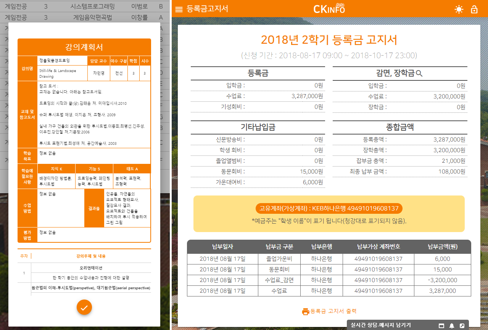
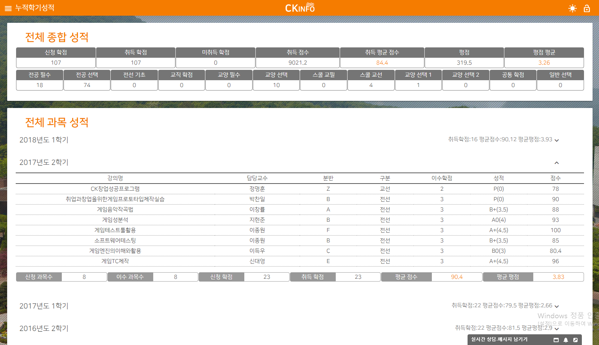
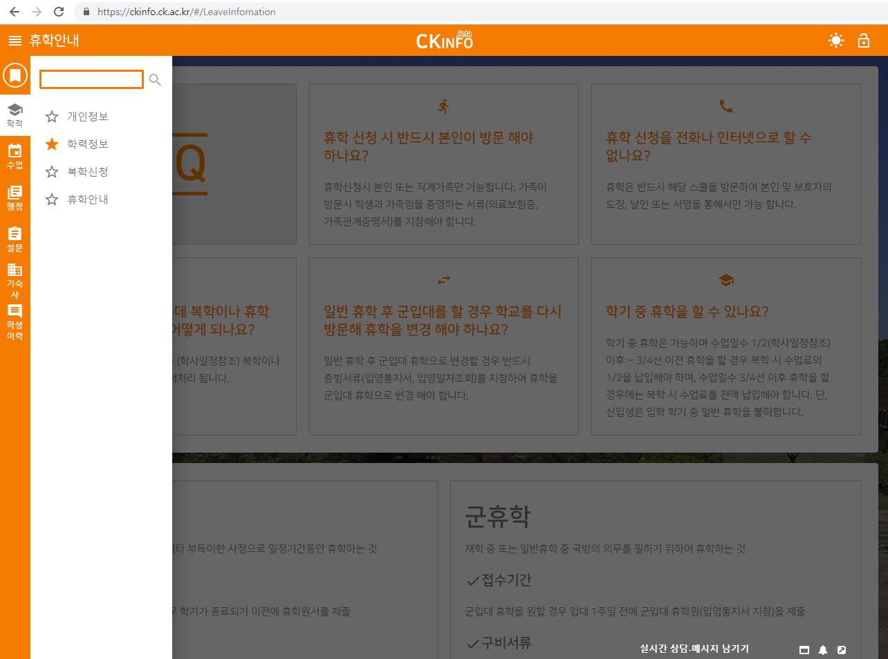
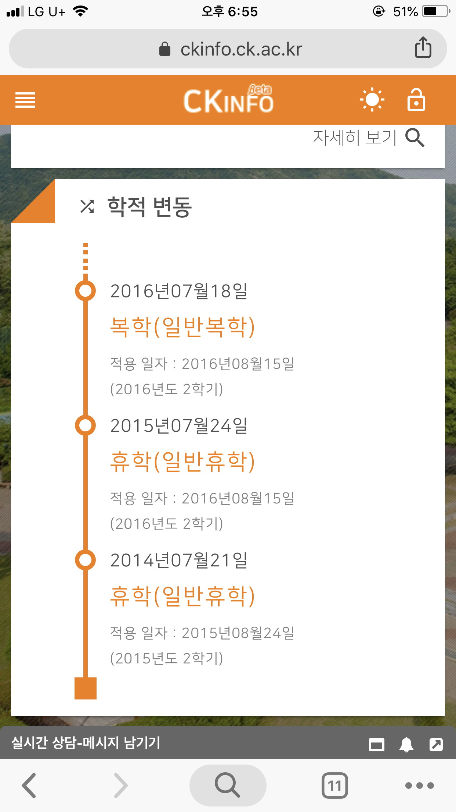
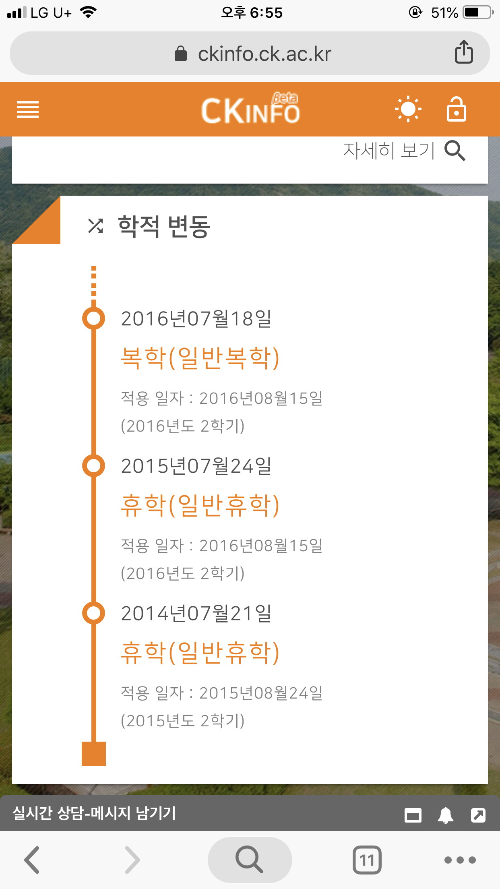

person신유빈(yubeen shin)
cake1995.10.24
phone010-8442-1411
emailsinyu_07@naver.com
인하공업전문대학교 | 컴퓨터정보공학과(심화과정) 재학중
청강문화산업대학교 | 게임학과 졸업
서울영상고등학교 | 영상미디어학과 졸업
2018.10.29 ~ 2019.02.28 NC soft 기반시스템개발실 API게이트웨이개발팀 개발 보조(단기계약직)
2016.08 ~ 2018.10 청강문화산업대학교 전자계산소 근로장학생
2016.05 ~ 2016.07엔도어즈 QA 아르바이트
저는 이런걸 할 줄 압니다 mood
-
HTML,CSS 좀 잘하는 것 같아요
미디어쿼리, 애니메이션, 크로스 브라우징······.
-
스크립트 능력이 매우 뛰어나진 않지만, 응용력이 좋아요~
Angular를 이용해 개발을 위해 TypeScript, nodeJS 사용해 봤습니다!
- UI/UX 디자인 입맛에 잘 맞춰드려요
- ORACLE SQL 할만큼 합니다
쿼리문 작성, 뷰 테이블 제작······.
- 포토샵/일러스트 빼놓을 수 없죠
사진 보정, 편집 ······.
내가 하는 일만큼은 책임감 있게 부딪쳐보고 끝장내기 좋아합니다! 안되는걸 포기하지 않고 되게 하기 위해 연구합니다

- 
- 
- 
프로젝트 명 - CKInfo
플랫폼 - 웹
사용 언어 - HTML/CSS/TypeScript/SQL
사용 프로그램 - Angular/DreamFactory/Oracle/Git
개발참여기간 - 2016. 11 ~ 2018. 10 (라이브 서비스 중)
개발 인원 - 6명
담당 업무 - 웹프론트 개발 전반, UI/UX디자인 전반, DB view 부분 개발
 

CKInfo는 기존의 학사 정보 시스템인 CK4U가 ActiveX로 구동되는 불편한 점을 보완하기 위해 CK4U를 대체 할 학생 학사 관리 웹 시스템입니다. 기존의 MacOS나 모바일, 및 IE를 제외한 다른 브라우저에서 조회하지 못했던 학사 정보를 어떤 모바일이든 어떤 PC든 모두 자신의 학사 정보를 열람하고 수정할 수 있는 학사관리 시스템입니다. Angular 프레임 워크로 개발되었으며 DreamFactory를 활용하여 RestAPI 형식으로 서버와 통신하고 Angular Material를 활용해 HTML 페이지를 개발하였습니다.
프로젝트가 제가 전자계산소를 일하기 시작하면서 거의 한 사람 분을 하게 된 프로젝트라 애착이 큰 프로젝트입니다. 이 프로젝트를 하면서 웹 개발 쪽에 흥미를 가지고 많이 배우게 되었던 프로젝트입니다.
모든 페이지에서 미디어 쿼리를 사용하여 모바일 및 현재 모든 해상도에서 대응이 되도록 개발하였습니다. 외에도 대표 템플릿 디자인 및 적용하였습니다.